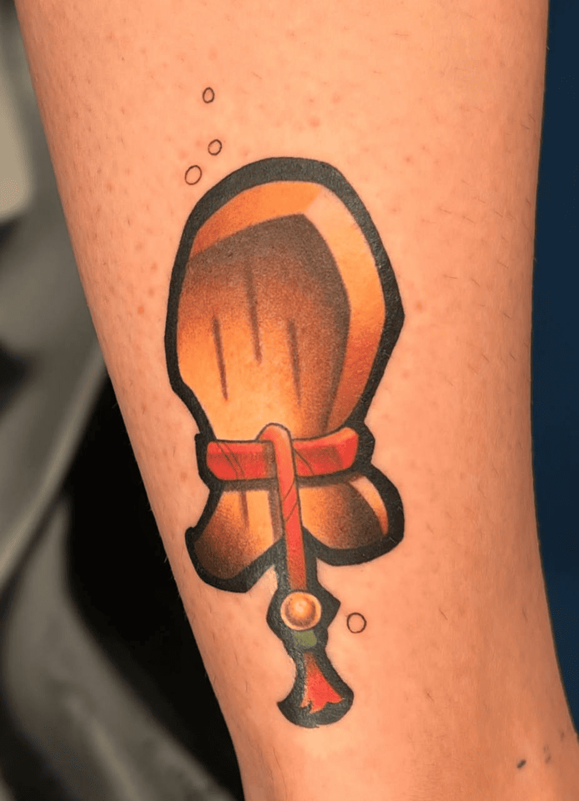
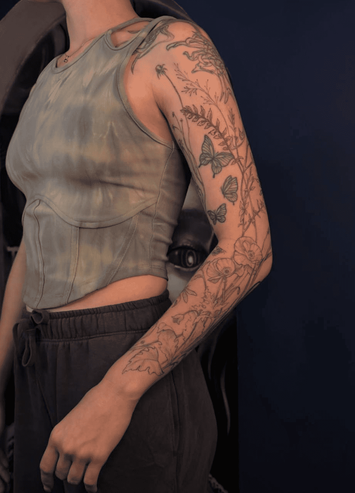
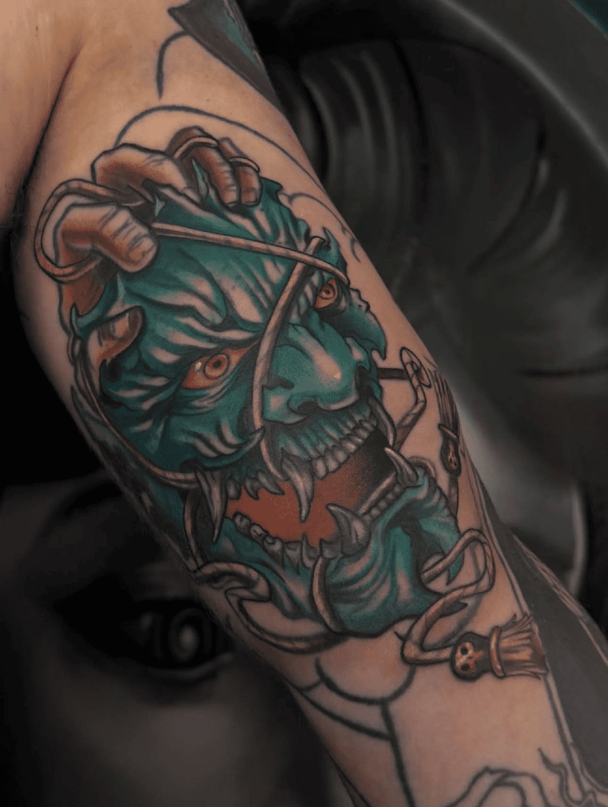
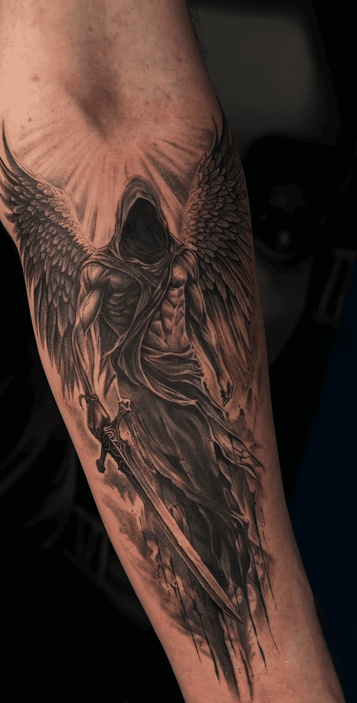
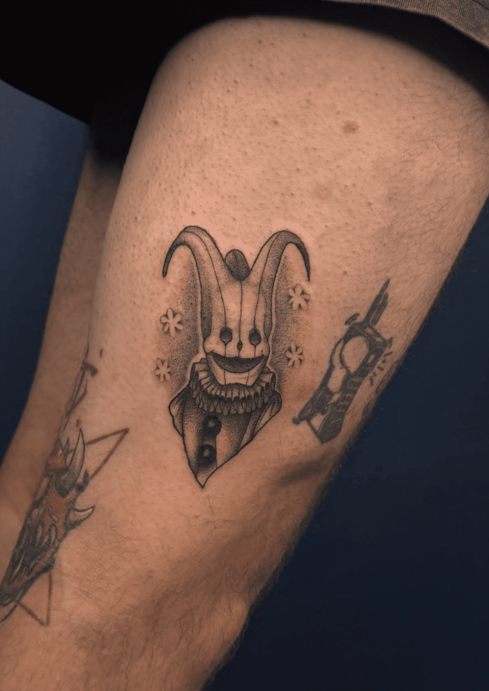
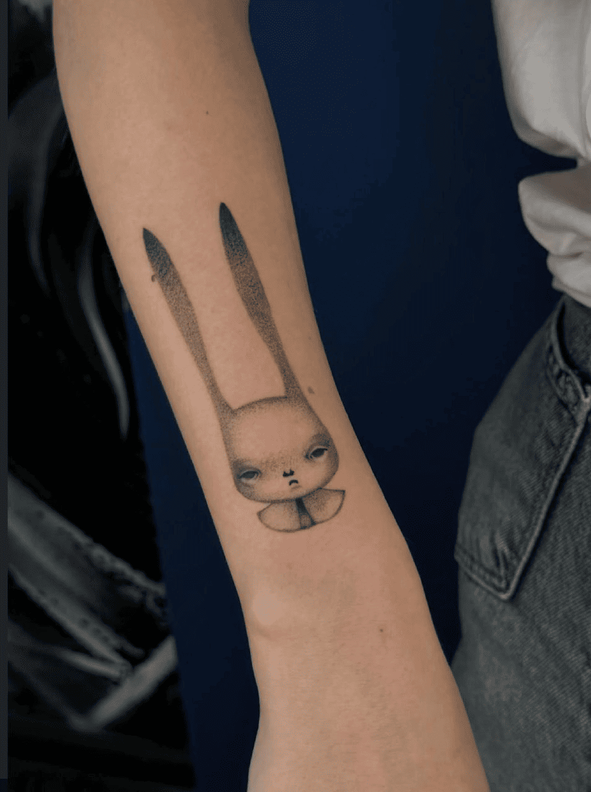
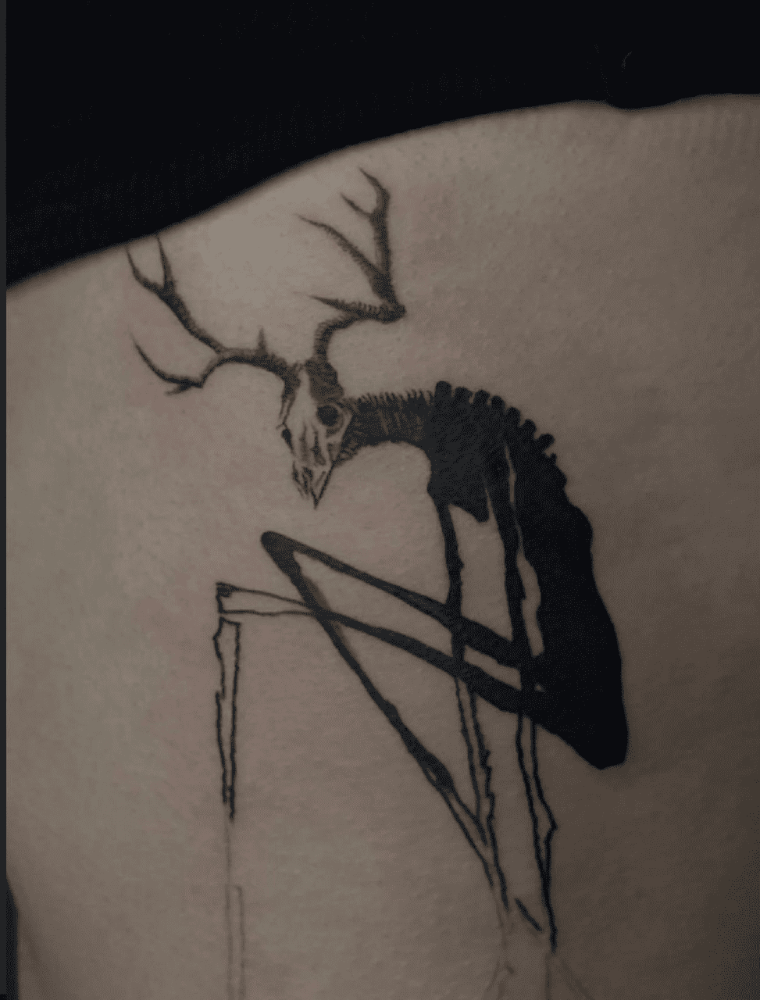
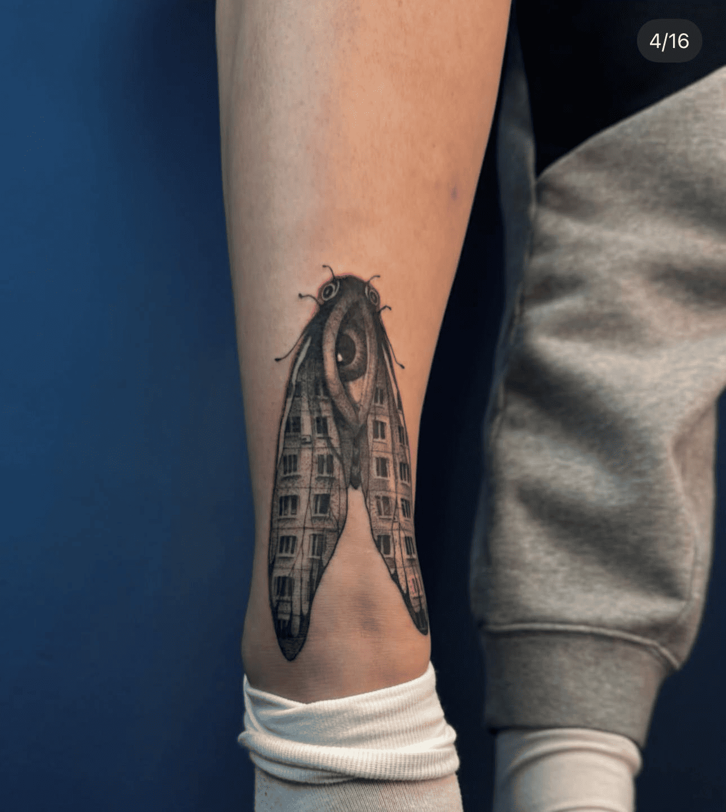

Поставишь руку
Освоишь ровный контур, випы, градиенты и плотный закрас. От базовых упражнений — до полноценной работы по эскизу.
тату-мастер · ментор владелец студии v.mesto.tattoo
Поставишь руку и освоишь контур, випы, градиенты и плотный закрас — от базовых упражнений до работы по эскизу.
Разберёшь дезинфекцию, стерилизацию, заживление и работу пигмента под кожей, чтобы понимать, как не навредить клиенту.
Пройдёшь практику на моделях и к финалу курса сделаешь работу самостоятельно — без постоянной помощи мастера.
Научишься оформлять портфолио, фотографировать работы, общаться с клиентами, вести соцсети и понимать, где искать первые записи.
За 14 занятий я проведу тебя от базовой теории и постановки руки до самостоятельной работы на модели. Ты научишься работать безопасно, соберёшь портфолио и поймёшь, как найти первых клиентов и начать брать деньги за свою работу.
Освоишь ровный контур, випы, градиенты и плотный закрас. От базовых упражнений — до полноценной работы по эскизу.
Разберёшь дезинфекцию, стерилизацию, заживление и процессы под кожей — чтобы понимать, как не навредить клиенту.
Сначала ты работаешь под моим личным контролем и получаешь обратную связь на каждом этапе, а к финальному занятию выполняешь работу самостоятельно.
Научишься фотографировать работы, оформлять портфолио, общаться с клиентами и понимать, как получить первые записи.
Теорию я даю тебе онлайн в удобном темпе: короткие видео до 20 минут + тест после каждого блока, чтобы ты не просто посмотрел материал, а действительно его понял. А в студии мы переходим к очной практике — от первых линий на искусственной коже до самостоятельной работы на модели.
Короткие видео до 20 минут и тест после каждого блока.
Контур, випы, градиенты и закрас — лично под моим контролем.
Собираешь изученные техники в полноценные работы.
От первой работы со мной до самостоятельной татуировки.
В отдельном видео-блоке я покажу, как оформить страницу, какой контент публиковать, как общаться с клиентами и запускать рекламу — чтобы после курса ты понимал, откуда брать первые записи.
За 14 занятий я проведу тебя от базовой теории и первых линий до момента, когда ты сможешь самостоятельно выполнить работу на модели.
Введение, оборудование, картриджи, косметика, заживление татуировки, процессы под кожей, дезинфекция и стерилизация.
Понимаешь, как работает пигмент под кожей, как не навредить клиенту и какие материалы нужны для начала работы.
Сборка рабочего места, теория ровных однопроходных линий и практика тонким и толстым картриджем.
Собираешь место мастера, уверенно держишь машинку и делаешь свои первые ровные линии.
Контуры с изгибами, новая постановка руки под 90° и подготовка материалов для следующих практик.
Осваиваешь новую постановку руки и учишься делать более сложные контуры.
Теория whip RL, правило шести тонов, практика градиента с выходом в кожу и отработка техники на мини-эскизе.
Делаешь зернистый whip без полос, понимаешь тональность градиента и выполняешь первую работу по эскизу.
Теория и практика whip RM, постановка руки и техника плотного закраса.
Умеешь делать мягкий воздушный whip RM и плотный равномерный закрас.
Собираешь изученные техники в полноценную работу по эскизу.
Учишься применять контур, whip, градиенты и закрас уже внутри одной работы.
Практика на новом эскизе с усложнением задачи.
Закрепляешь техники и становишься увереннее в работе.
Полноценная отработка ещё одного нового эскиза.
Техники становятся стабильнее, чище и увереннее.
Отработка будущего эскиза и видео-блок о комфорте клиента во время сеанса.
Готовишься к работе на реальной коже и понимаешь, как взаимодействовать с клиентом во время процедуры.
Практика на реальной модели и дезинфекция и стерилизация держака.
Чувствуешь реальную кожу, проходишь страх первой татуировки и учишься работать с клиентом.
Полноценная отработка будущего эскиза.
Уверенно применяешь изученные техники в одной работе.
Практика на модели, теория и практика фотографии готовой татуировки для портфолио.
Умеешь работать с клиентом и красиво снимать готовую работу для своего портфолио.
Финальная отработка эскиза перед самостоятельной работой.
Закрепляешь весь алгоритм — от подготовки до выполнения работы.
Ты самостоятельно проводишь всю работу на модели — от подготовки до завершения сеанса.
Работаешь с клиентом самостоятельно — уже без моей постоянной помощи.
После последней модели я тебя не отпускаю просто со словами «ну всё, удачи». Я даю материалы для старта, помогаю оформить себя как мастера, разобраться с контентом, общением и первыми записями.
Оформление страницы, форматы контента и идеи для публикаций.
Правила общения и путь от первого сообщения до записи.
Базовая настройка рекламы через Instagram.
В течение месяца после курса я проверяю твои задания, работы и отвечаю на вопросы, которые появляются уже на старте.
Разберём твои новые работы, ошибки и посмотрим, что изменилось после обучения.
Я не просто даю тебе теорию. Я сама каждый день работаю с клиентами и передаю тебе тот подход, которым пользуюсь в своей работе. Я сама каждый день работаю с клиентами и передаю тебе тот подход, которым пользуюсь в своей работе.
На практике я нахожусь рядом: корректирую постановку руки, технику и помогаю разобраться в ошибке сразу, а не после занятия.
Мне важно, чтобы ты не просто повторял движения за мной, а понимал, как ведёт себя кожа и пигмент, почему одна техника работает, а другая может навредить клиенту.
После последнего занятия я не исчезаю: ещё месяц ты можешь присылать мне работы и задавать вопросы, которые появляются уже во время самостоятельной практики.
«Моя задача — не сделать работу вместо ученика, а довести его до момента, когда он может сделать её сам.
ПОЛИНА ЛУГОВАЯ
То, как работаю я, и то, к какому уровню мы идём вместе на обучении.








Здесь я хочу оставить не короткие «всё понравилось», а настоящие слова моих учениц — без рекламных формулировок. И показать работы, которые стоят за этими словами.
Я собрала здесь вопросы, которые чаще всего появляются перед обучением. Если твоего вопроса нет — его всегда можно задать мне лично.
Да. Программа построена так, чтобы пройти путь с нуля: от базовой теории и первых линий на искусственной коже до самостоятельной работы на модели.
Для старта не нужно быть профессиональным художником. На обучении мы работаем с эскизами и разбираем, как применять изученные техники внутри готовой работы.
Теория проходит онлайн в коротких видео до 20 минут. После каждого блока есть небольшой тест на 2–3 вопроса, чтобы ты не просто посмотрела материал, а действительно его поняла.
Практика проходит очно в студии. Сначала мы ставим руку и отрабатываем техники, затем переходим к эскизам и работе на реальных моделях. Во время практики я нахожусь рядом и корректирую тебя по ходу работы.
На первом теоретическом блоке мы разбираем машинки, картриджи, косметику и материалы. Ты поймёшь, что действительно нужно для старта и на что стоит обращать внимание при выборе оборудования.
Да. В программе есть практика на реальных моделях. Сначала ты работаешь под моим контролем, а к финалу курса выполняешь работу самостоятельно.
После основного обучения у тебя остаётся доступ к дополнительным материалам и закрытой базе. В течение месяца ты также можешь присылать мне работы и задавать вопросы, которые появляются уже во время самостоятельной практики.
Да. После основной практической части есть отдельный блок по оформлению страницы, контенту, общению с клиентами и базовой настройке рекламы через Instagram.
Актуальные условия оплаты и возможную рассрочку лучше уточнить перед записью. Я расскажу, какие варианты доступны на текущий поток.
Напиши мне в Telegram. Я отвечу на вопросы, расскажу про ближайший поток и помогу понять, подходит ли тебе этот формат обучения.